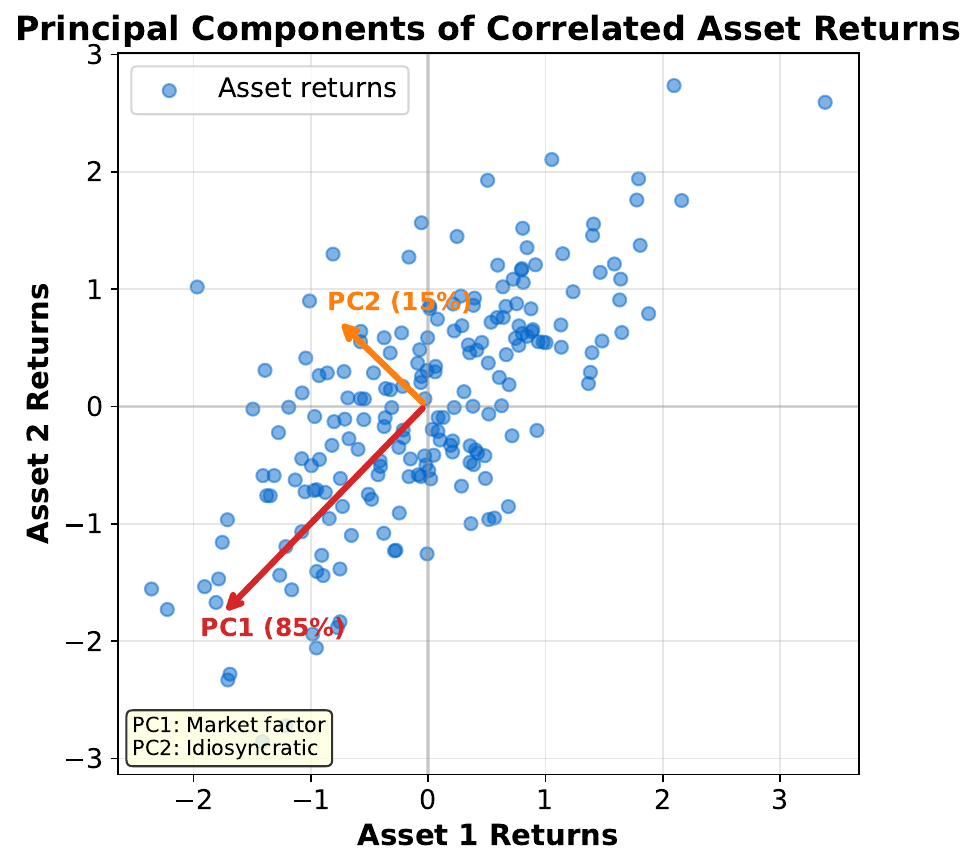
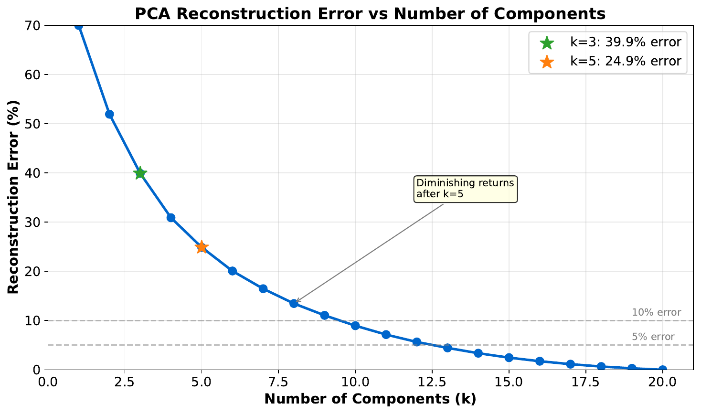
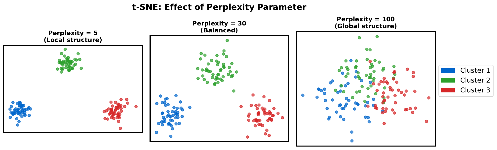
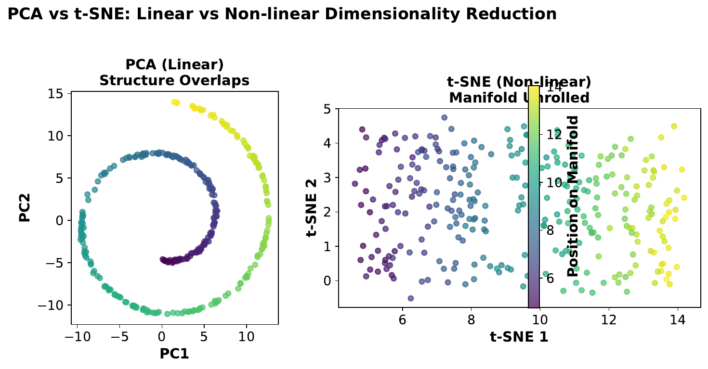
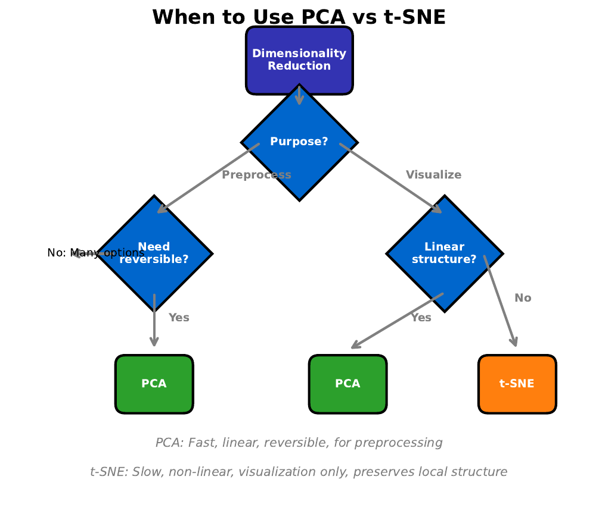

L05: PCA & t-SNE
Deep Dive: Theory, Implementation, and Applications
Methods and Algorithms – MSc Data Science

Scan for course materials
Part 1: PCA Foundations
Principal Component Analysis (PCA)
Find orthogonal directions of maximum variance
Project data onto these directions
Reduce dimensions while preserving information
Key Properties:
Linear transformation
Components are uncorrelated
Reversible (can reconstruct original data)
PCA: one of the most fundamental tools in data science
Mathematical Foundation
Covariance Matrix: \[\Sigma = \frac{1}{n-1} X^T X \quad \text{(centered data)}\]
Eigendecomposition: \[\Sigma v = \lambda v\] where \(v\) = eigenvector (principal direction), \(\lambda\) = eigenvalue (variance)
Projection: \[Z = X W_k \quad \text{where } W_k = [v_1, v_2, \ldots, v_k]\] Eigenvalues tell us how much variance each component captures
Variance Explained
Proportion of Variance: \[\text{Explained Variance Ratio}_i = \frac{\lambda_i}{\sum_{j=1}^{p} \lambda_j}\]
Cumulative Variance: \[\text{Cumulative}_k = \sum_{i=1}^{k} \frac{\lambda_i}{\sum_{j=1}^{p} \lambda_j}\] Rules of thumb for choosing k:
Keep 80-95% of total variance
Use scree plot “elbow” method
Kaiser criterion: keep components with \(\lambda > 1\)
Balance dimensionality reduction with information preservation
Scree Plot

Look for the “elbow” where variance explained drops off
Principal Components Visualization

PC1 captures the dominant trend, PC2 the residual variation
Reconstruction
From k components back to original space: \[\hat{X} = Z W_k^T = X W_k W_k^T\]
Reconstruction Error: \[\text{Error} = ||X - \hat{X}||_F^2 = \sum_{i=k+1}^{p} \lambda_i\] Reconstruction error = sum of discarded eigenvalues
Reconstruction Error vs Components

Adding more components always reduces error (but diminishing returns)
Part 2: PCA in Finance
Portfolio Risk Decomposition:
PC1 often represents “market factor”
PC2-3 may capture sector/size factors
Higher PCs: idiosyncratic risk
Applications:
Risk factor modeling
Dimensionality reduction for trading signals
Noise reduction in time series
Feature extraction for ML models
PCA reveals latent structure in financial data
PCA Limitations
When PCA Falls Short:
Non-linear relationships (curved manifolds)
Cluster structure not aligned with variance
Discrete or categorical data
Outliers heavily influence results
Solutions:
Kernel PCA (non-linear)
Robust PCA (outlier-resistant)
t-SNE/UMAP (for visualization)
PCA assumes linear structure and Gaussian-like distributions
Part 3: t-SNE Introduction
t-Distributed Stochastic Neighbor Embedding
Non-linear dimensionality reduction
Optimized for visualization (2D/3D)
Preserves local neighborhood structure
Key Idea:
Convert distances to probabilities
In high-D: Gaussian similarities
In low-D: t-distribution similarities
Minimize KL divergence between distributions
t-SNE: visualization method, NOT for preprocessing
t-SNE: Mathematical Formulation
High-dimensional similarity: \[p_{j|i} = \frac{\exp(-||x_i - x_j||^2 / 2\sigma_i^2)}{\sum_{k \neq i} \exp(-||x_i - x_k||^2 / 2\sigma_i^2)}\]
Low-dimensional similarity (t-distribution): \[q_{ij} = \frac{(1 + ||y_i - y_j||^2)^{-1}}{\sum_{k \neq l} (1 + ||y_k - y_l||^2)^{-1}}\]
Objective: Minimize KL divergence \[KL(P||Q) = \sum_{i \neq j} p_{ij} \log \frac{p_{ij}}{q_{ij}}\] t-distribution has heavier tails, allowing better separation in low-D
Perplexity Parameter

Perplexity \(\approx\) effective number of neighbors (try 5-50)
Perplexity Guidelines
Perplexity controls the balance between local and global structure:
Low perplexity (5-10): Focus on very local structure
Medium perplexity (30-50): Balanced (default)
High perplexity (100+): More global structure
Guidelines:
Should be smaller than number of points
Larger datasets can use higher perplexity
Run multiple perplexities to validate findings
Results can vary significantly with perplexity choice
t-SNE Caveats
Important Limitations:
Non-deterministic (run multiple times)
Cluster sizes are not meaningful
Distances between clusters are not meaningful
Slow for large datasets (O(\(n^2\)))
Best Practices:
Use PCA first to reduce to 30-50 dims
Run multiple times with different seeds
Don’t over-interpret cluster sizes/distances
Use for exploration, not final conclusions
t-SNE shows IF clusters exist, not HOW they relate
Part 4: PCA vs t-SNE

PCA: global structure, linear. t-SNE: local structure, non-linear
Comparison Table
| Aspect | PCA | t-SNE |
|---|---|---|
| Type | Linear | Non-linear |
| Speed | Fast \(O(np^2)\) | Slow \(O(n^2)\) |
| Deterministic | Yes | No |
| Preserves | Global variance | Local neighbors |
| Reversible | Yes | No |
| Use for ML | Yes (preprocessing) | No |
| Visualization | Okay | Excellent |
Use PCA for preprocessing, t-SNE for visualization only
Cluster Preservation

t-SNE often reveals cluster structure better than PCA
When to Use Which
Use PCA When:
Preprocessing for ML (reduce features)
Linear relationships expected
Need reversibility (reconstruction)
Speed matters
Use t-SNE When:
Visualizing high-dimensional data
Looking for cluster structure
Non-linear manifolds expected
Exploratory analysis
Often use both: PCA first to 30-50 dims, then t-SNE for visualization
Decision Framework

Consider purpose: preprocessing (PCA) vs visualization (t-SNE)
Part 5: Implementation
PCA in scikit-learn:
PCA(n_components=k): Keep k componentsPCA(n_components=0.95): Keep 95% variancepca.explained_variance_ratio_: Variance per componentpca.inverse_transform(): Reconstruct original
t-SNE in scikit-learn:
TSNE(n_components=2, perplexity=30)Always normalize data first
Consider PCA preprocessing for speed
Standardize data before PCA; normalize before t-SNE
UMAP: Modern Alternative
Uniform Manifold Approximation and Projection
Faster than t-SNE
Better preserves global structure
Can embed new points (unlike t-SNE)
Hyperparameters: n_neighbors, min_dist
When to use UMAP:
Large datasets (faster than t-SNE)
Need to embed new data points
Want more preserved global structure
UMAP often preferred over t-SNE in modern practice
Summary
PCA:
Linear, fast, reversible
Use for preprocessing and feature extraction
Choose k by variance explained or elbow
t-SNE:
Non-linear, slow, visualization-only
Excellent for exploring cluster structure
Don’t interpret distances or sizes literally
Common Pipeline: Standardize \(\rightarrow\) PCA (30-50) \(\rightarrow\) t-SNE (2D) Next: Embeddings and Reinforcement Learning
References
Textbooks:
James et al. (2021). ISLR, Chapter 12: Unsupervised Learning
Hastie et al. (2009). ESL, Chapter 14: Unsupervised Learning
Original Papers:
Pearson (1901). On Lines and Planes of Closest Fit
van der Maaten & Hinton (2008). Visualizing Data using t-SNE
McInnes et al. (2018). UMAP
Documentation:
scikit-learn:
sklearn.decomposition.PCAscikit-learn:
sklearn.manifold.TSNE
t-SNE paper: one of the most influential visualization papers